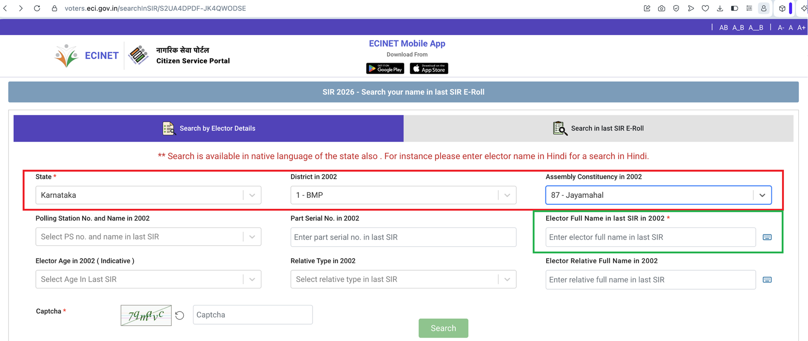

Tip: try current names, old/historical names, or just part of a name (e.g. "Vyalikaval", "4th Cross", "RBI Colony"). Spelling doesn't need to be exact. Search covers every constituency at once — each result shows which one it's in.
Pins show approximate locations of roads/localities in the 2002 index (geocoded automatically — treat placement as indicative, not exact). Click a pin for its part number and PDF link.
Part numbers restart at 1 for every constituency, so pick yours first.
Once you know your part number here, you can also search for your name directly on the official Election Commission of India Special Intensive Revision (SIR) portal.
How to fill the SIR form
The ECI Enumeration Form has a "Comparative Roll Details" section asking whether you (or a relative) appear in the 2002 electoral roll. Use the tools on this site to find your part number and serial number first, then fill in the form as follows:
- Your details (left box, "Details of the Voter in the Previous Special Summary Revision Electoral Roll") — fill in only if you were found in the 2002 rolls; otherwise leave blank.
- Relative's details (right box) — fill in only if a relative was found in the 2002 rolls; otherwise leave blank.
- Personal & Family Information (bottom section) — mandatory for everyone, regardless of whether you appear in the 2002 rolls.

Click the image to enlarge — colour-coded to show which boxes are conditional (based on being found in the 2002 rolls) and which are always mandatory.
ECI Voter Search (SIR)
Search for your name in the electoral roll using the official ECI portal:
Unable to log in on the site above? click here instead.

Click the image to enlarge — shows which fields to fill in. The example above uses 87 – Jayamahal; enter your own constituency's number and name instead.
Browse every part of a constituency's 2002 electoral roll, with the roads/localities recorded in each and a link to the original PDF.